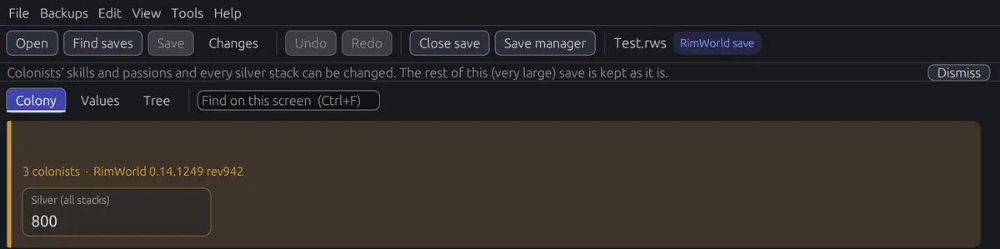

RimWorld セーブデータエディター
Universal Save Editor で、お使いのPC上で RimWorld のセーブデータを編集できます。590本以上（593本）のゲームに対応した、無料のオフラインセーブデータエディター兼マネージャーです。バックアップ、復元、新しいプレイの開始も同じウィンドウで行えます。アップロードはなく、制限もありません。
バージョン 0.9.3： Windows (64-bit) · Windows on ARM · Linux (64-bit) · Linux on ARM · macOS
すべてのバージョンとリリースノート
編集できる内容
Colony: every colonist's skills (level and passion, modded passions included) and every silver stack, plus steel, plasteel, components, gold, uranium, wood, cloth, medicine, chemfuel and the other stockpiled resources stack by stack, edited in place even in 100+ MB saves.
エディターには、これらの値の名前が英語で表示されます。

RimWorld のセーブデータの場所
フォルダ： %USERPROFILE%\AppData\LocalLow\Ludeon Studios\RimWorld by Ludeon Studios\Saves
ファイル： <colony>.rws
自分で探す必要はありません。エディターで自分のゲームのセーブデータを探すを選び、RimWorld を選ぶと、見つかったセーブデータが一覧表示されます。（ブラウザ版はフォルダの中を調べられないので、このフォルダにあるファイルを自分で開いてください。）
RimWorld のセーブデータの編集のしかた
- Windows、macOS、Linux向けの Universal Save Editor をダウンロードして実行するだけです。何もインストールしたくない場合は、ブラウザで使うこともできます。こちらもパソコン上で動作し、保存すると編集後のファイルがダウンロードされます（ChromeとEdgeでは同じファイルへの保存もできます）。
- ゲームを終了してください。起動したままだと、変更が上書きされてしまいます。
- 自分のゲームのセーブデータを探すを選び、RimWorld を選んでセーブデータを開きます（セーブデータのファイルをウィンドウにドラッグしても開けます）。
- 好きなところを変更して、保存を選びます。エディターは新しいファイルを確認し、先に元のファイルをバックアップします。
RimWorld のセーブデータについてのよくある質問
RimWorld のセーブデータはどこにありますか？
たいてい %USERPROFILE%\AppData\LocalLow\Ludeon Studios\RimWorld by Ludeon Studios\Saves にあり、ファイル名は <colony>.rws です。ダウンロード版のエディターなら自動で見つけます。自分のゲームのセーブデータを探すを選び、RimWorld を選んでください。
RimWorld は編集したセーブデータを読み込めますか？
エディターは、ゲームが使うのと同じ形式でセーブデータを書き戻し、置き換える前に新しいファイルを読み直して確認します。元のファイルは先にバックアップされるので、ゲーム内で何かおかしければバックアップから元に戻せます。
Steam DeckやLinuxで RimWorld のセーブデータを編集できますか？
はい。Linux版があり、自分のゲームのセーブデータを探すは、Steam PlayがWindowsゲームのセーブデータを置くProtonやWineのプレフィックスの中も探します。
ブラウザで RimWorld のセーブデータを編集できますか？
はい。ブラウザ版はお使いのパソコン上で動作し、セーブデータをアップロードすることはありません。ファイルは自分で開き、コピーを取っておいてください。保存すると、古いファイルのバックアップではなく編集後のファイルがダウンロードされます。ChromeとEdgeでは同じファイルへの保存もでき、その前にブラウザ内に元のファイルを保管します。
オンラインプレイで使っても安全ですか？
編集したセーブデータは一人用のプレイ専用です。オンラインやマルチプレイのモードでは、規約違反になったりアカウントが制裁を受けたりするおそれがあるため、使わないでください。
料金はかかりますか？
いいえ。無料で、これからもずっと無料です。広告もアカウントも制限もありません。コードはGPL-3.0のオープンソースです。
ゲームで問題なく使えましたか？
RimWorld で編集を試しましたか？うまくいったかどうかを教えてください。1分ほどで済み、セーブデータは送信されません。
選ばれる理由
- ずっと無料。料金も広告もアカウントも有料プランもありません。
- オフライン。セーブデータがパソコンの外に出ることはありません。何もアップロードしないので、ファイルサイズの上限も順番待ちも利用制限もありません。
- 安全。どのセーブデータも、書き込む前に読み直して確認し、元のファイルを先にバックアップします（バックアップ › セーブマネージャーを開く）。
- 未対応のゲームでも使えます。データ検索で、わかっている数値や、わからない数値（体力バーや隠しカウンターなど）を探せます。スキャンして、プレイし、保存して、増えたもの、減ったもの、変わったもの、変わらなかったものに絞り込みます。
- LinuxとSteam Deck。自分のゲームのセーブデータを探すは、Steam Playで動くWindowsゲームがセーブデータを置くProtonやWineのプレフィックスの中も探します。
- 日本語に対応。メニューとメッセージは、英語、ドイツ語、スペイン語、フランス語、イタリア語、ポーランド語、トルコ語、ロシア語、ブラジルポルトガル語、日本語、韓国語、簡体字中国語、繁体字中国語で、システムの言語に合わせて表示されます。
- セーブマネージャー（ツールバーのボタン）。自動バックアップと名前付きバックアップを、各セーブデータの隣のフォルダに保存します。ゲームがそこを読み込むことはありません。好きなバックアップに戻したり（現在のセーブデータは先にバックアップされます）、比較したりできます。セーブデータが1つしかないゲームでは、バックアップして新しいゲームを始め、あとで元のセーブデータに戻すこともできます。どのバックアップも、置き換える前にディスクへ書き込み、確認します。
- オープンソース。誰でもコードを読めます（GPL-3.0）。
編集したセーブデータは一人用のプレイ専用です。オンラインやマルチプレイのモードでは使わないでください。